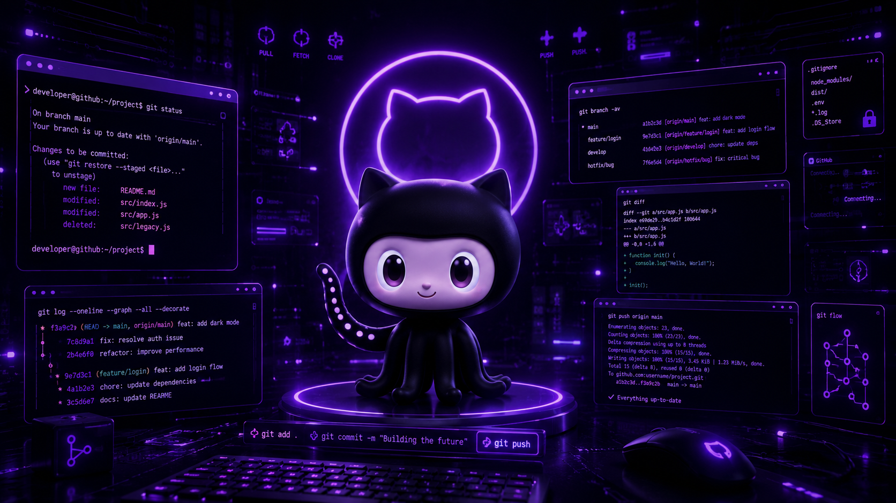

Identifique seu usuário
Faça isso uma vez no computador para que seus commits tenham o autor correto.
git config --global user.name "Seu Nome"
git config --global user.email "seu@email.com"
git initUm passo a passo direto para criar um repositório local, enviar seu projeto para o GitHub e publicar sua página na internet — do zero ao ar.
Faça isso uma vez no computador para que seus commits tenham o autor correto.
git config --global user.name "Seu Nome"
git config --global user.email "seu@email.com"Esses comandos mostram qual nome e e-mail serão usados nos commits.
git config user.name
git config user.emailUse o mesmo e-mail cadastrado no GitHub para associar os commits ao seu perfil automaticamente.
No terminal, navegue até a pasta onde está o seu index.html.
cd caminho/da/sua/pastaCria a pasta oculta .git onde o histórico do projeto será guardado.
git initMostra arquivos novos, modificados ou prontos para commit.
git statusPrepara todos os arquivos da pasta para o primeiro commit.
git add .O commit salva uma versão do projeto no histórico local com uma mensagem descritiva.
git commit -m "Projeto inicial"minha-landing-page.Depois de criar o repositório, copie a URL HTTPS exibida pelo GitHub — algo como https://github.com/seu-usuario/minha-landing-page.git.
O padrão mais usado atualmente é main.
git branch -M mainSubstitua a URL pelo link do seu repositório no GitHub.
git remote add origin https://github.com/seu-usuario/minha-landing-page.gitVerifique se o Git está apontando para o lugar certo.
git remote -vO -u conecta sua branch local com a remota para facilitar próximos pushes.
git push -u origin mainPara uma página estática com index.html, o jeito mais simples é publicar pelo GitHub Pages diretamente.
Depois de alguns minutos, o GitHub exibe o link publicado — normalmente no formato https://seu-usuario.github.io/nome-do-repositorio/.
Sempre que editar o projeto, use este ciclo para salvar e publicar as mudanças:
git status
git add .
git commit -m "Descreva a alteração"
git pushEditou arquivos — altere HTML, CSS, imagens ou scripts normalmente.
Fez commit — salvou uma versão local com uma mensagem clara.
Fez push — enviou a versão para o repositório no GitHub.
GitHub Pages atualizou — o deploy acontece automaticamente após o push.